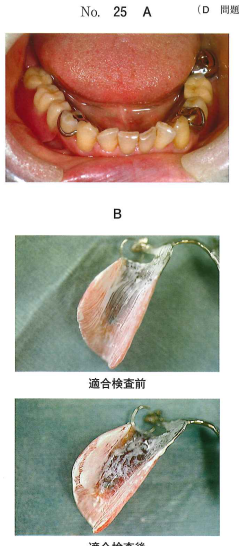
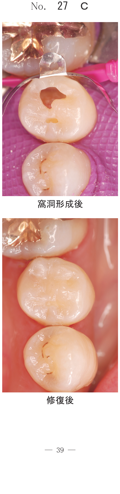
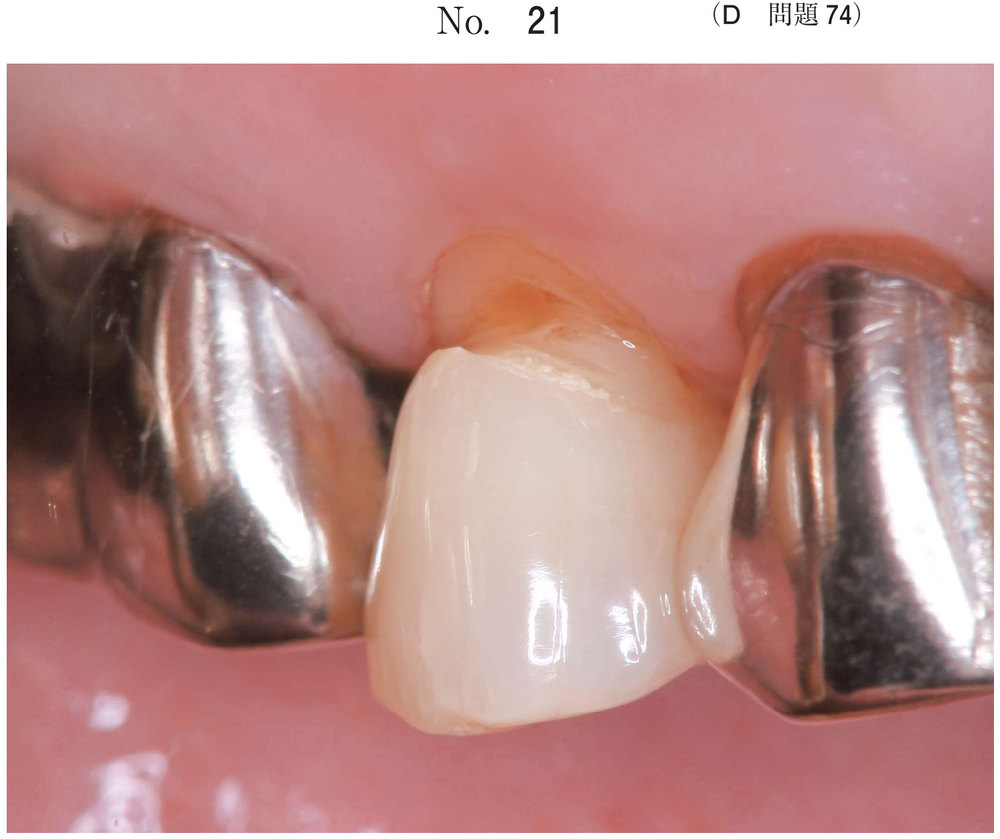

口腔内試適・調整・装着・術後管理
義歯の装着
義歯装着時の留意事項
義歯の装着に際して、外観、形態、機能について試適した段階で、患者がある程度満足するところまで調整しておくことが大切。
義歯の点検
| 点検部位 | 確認内容 |
|---|---|
| 金属部分 | 表面の滑らかさ、辺縁の鋭さ、尖端の欠如 |
| クラスプ・連結子 | 内面の粗造、鋳造欠陥、研削による傷 |
| レジン部分 | 表面の滑らかさ、辺縁の厚さ、粘膜面の突起 |
義歯の試適
| 点検項目 | 確認内容 |
|---|---|
| レストの適合 | 浮き上がりの有無 |
| クラスプの適合 | 鉤腕が密接しているか、鉤先に注意 |
| 大連結子・小連結子 | 粘膜に密着しているか |
| 床辺縁の形・長さ | 厚みや粘膜との関係が妥当か |
適合検査
適合検査材（シリコーン系）を用いて床粘膜面の適合状態を診断する。
- 検査材の厚い部分が強く当たっている部位
- 検査材の薄い部分または透けている部分が接触していない部位
- 適合検査材を義歯床内面に塗布
- 口腔内に装着し軽く咬合させる
- 撤去後、検査材の厚みを確認
- 厚い部分（圧迫部位）をカーバイドバーで削合
咬合の点検・調整
- 習慣性閉口位をとらせたとき、早期接触、咬頭干渉となる部分をよく確かめて削合調整
- 中心咬合位では残存歯と人工歯とが同時に咬合接触するように調整
- 咬合紙を用いて接触状態を確認
装着直後にみられる症状
1. 粘膜の痛み
| 症状 | 原因 | 対応 |
|---|---|---|
| 咬合時の顎堤の痛み | 義歯床が咬合圧で粘膜を圧迫 | 適合検査材で当たりを確認し削合 |
| 着脱時の痛み | 顎堤の隆起部にアンダーカット | 床辺縁の調整、検査と削合 |
2. 咬傷（頬粘膜・舌の咬傷）
頬粘膜や舌を誤って咬んでしまう傷。新義歯の人工歯と対合歯との水平的な被蓋が不十分な場合や、義歯床縁の厚みが過大なことが原因。
- 対処法：義歯床縁の厚みの調整、被蓋の調整
- 装着後数日はゆっくりと咀嚼するよう指示
3. 食渣の停滞
支台装置や義歯床の設計形態が不適切、義歯の維持力が不足、口腔乾燥などが原因。
義歯修理
人工歯の修理
| 種類 | 原因 | 修理法 |
|---|---|---|
| 破折・脱落 | 過大な咬合力、人工歯材料の不適切な選択 | 直接法または間接法 |
| 摩耗 | 長期間使用による咬耗 | 間接法で人工歯交換 |
義歯床の修理（レジン床の破折）
| 方法 | 特徴 |
|---|---|
| 直接法 | チェアサイドで即時重合レジンを用いて行う。簡便だが強度は劣る |
| 間接法 | 印象採得後、技工室で加熱重合レジンで修理。強度に優れる |
- 破折片の断面の汚染面を1層バーで削除
- 口腔内で位置を合わせる
- 義歯修理用の常温重合レジンを筆積み法で盛り上げて硬化
- 義歯を口腔内から取り出し、内面にレジンの不足する部分があればさらに盛る
- 口腔外で静置して完全に硬化させる
- 研磨
クラスプの修理
クラスプの破折に対しては、ワイヤークラスプによる修理が一般的。
- 直接法：口腔内で即時重合レジンを用いて修理
- 間接法：印象採得後、技工室で修理
リライン
リラインとは、義歯床粘膜面と顎堤粘膜の間に大きな段差がある場合に、義歯床を移行的に修正する操作。
直接法リライン
| 手順 | 内容 |
|---|---|
| 1 | 不適合となった義歯床内面を1層削除 |
| 2 | 常温重合レジン（リベース材）の粉と液を練和して内面に塗布 |
| 3 | 硬化する前に口腔内に戻して義歯床の形態を整える |
| 4 | 口腔外に静置して硬化させる |
| 5 | 床辺縁を研磨 |
- 義歯床内面の削除が必要
- 常温重合レジンは口腔外で硬化させる（口腔内での完全硬化は×）
- 咬合させた状態で行う
間接法リライン
印象採得を行い、技工室で加熱重合レジンまたは常温重合レジンを重合する方法。品質は直接法より優れる。
粘膜調整（ティッシュコンディショニング）
粘膜に急性症状がある場合に行う義歯床の修理。軟らかい状態で粘膜調整の期間が終了した後でリライン用レジンに置き換える。
過去問（代表例）
60歳の女性。咀嚼時の義歯床下粘膜の痛みを主訴として来院した。部分床義歯装着時の口腔内写真（別冊No.25A）と適合検査前後の義歯の写真（別冊No.25B）を別に示す。
圧痕部に対して行う処置はどれか。1つ選べ。

b 義歯床の添加
c クラスプの調整
d 義歯床の裏装
e 人工歯の咬合調整
【解説】適合検査材の厚い部分が圧迫部位。義歯床の削合で圧痕部を除去する。
部分床義歯の直接法によるリラインで適切なのはどれか。3つ選べ。
b 咬合させた状態での印象採得
c 口腔内でのリライン材の硬化
d 撤去後の口腔外での研磨
e 義歯床外面へのリライン材の到達防止
【解説】直接法リラインでは義歯床内面の削除、咬合させた状態での印象が必要。リライン材は口腔外で硬化させる（cは×）。外面への到達防止も重要。
即時重合レジンを用いて行う処置の写真（別冊No.43）を別に示す。
口腔内で完全硬化までこの状態で静置するのはどれか。すべて選べ。

b イ
c ウ
d エ
e オ
【解説】口腔内で完全硬化まで静置するのはレスト座の印記やティッシュストップなど粘膜と接触しない部位。リラインや床修理は口腔外で硬化。
73歳の男性。義歯の修理を希望して来院した。義歯は6年前に装着したが、2か月前に上顎左側犬歯が自然脱落したという。診察の結果、直接法にて上顎義歯の修理を行うこととした。修理過程の写真（別冊No.30A〜E）を別に示す。
修理の手順を示せ。

b 即時重合レジンの添加
c 人工歯の常温重合レジンの除去
d 人工歯の位置決め
e 人工歯排列位置の印記
【解説】直接法修理：人工歯排列位置の印記→人工歯の位置決め→即時重合レジンの添加→人工歯と義歯床の接着→余剰レジンの除去の順。
72歳の男性。食事中に上顎右側顎堤が痛むことを主訴として来院した。上顎義歯は2年前に製作し、これまで疼痛はなかったが、数日前から症状を自覚したという。診察の結果、義歯の調整を行うこととした。初診時の口腔内写真（別冊No.24A）と処置過程の写真（別冊No.24B〜F）を別に示す。
適切な処置の順序はどれか。

【解説】適合検査材を塗布→口腔内に装着して咬合→撤去して確認→圧痕部をマーキング→カーバイドバーで削合の順。
72歳の女性。下顎前歯部の裏側に義歯が当たって痛いことを主訴として来院した。6年前に義歯を製作したが、徐々に下顎前歯部舌側の圧迫感が強くなってきたという。残存歯に動揺を認める。
原因として考えられるのはどれか。2つ選べ。

b 顎堤の吸収
c 義歯床の摩耗
d 義歯の破損
e 対合歯の喪失
【解説】長期使用により残存歯の挺出や顎堤の吸収が生じ、義歯と粘膜の関係が変化して圧迫感を生じる。